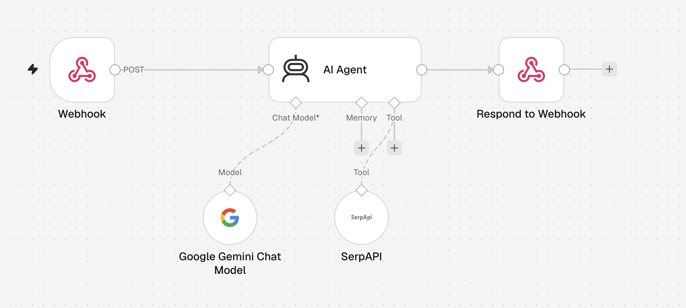

Agente de IA para Pesquisa de Empresas
Etapa 2 — Experiência de Desenvolvimento
Tópicos Avançados · IFSul Câmpus Gravataí · 2026
Bruno Osio
O que foi construído
Um agente de IA que, a partir do nome de uma empresa, pesquisa na web e devolve um relatório estruturado — em uma única interação.
- Identificação e atuação
- Produtos e serviços
- Mercado de atuação
- Concorrentes diretos
- Diferencial
+ Fontes consultadas e indicação de informações não encontradas.
Arquitetura da solução

Workflow no n8n: Webhook recebe o nome → AI Agent (Gemini + SerpAPI) pesquisa → Respond devolve o resultado. As chaves ficam no n8n, nunca no navegador.
Ferramentas e escolhas
- n8n.cloud agente — recomendado, montagem visual e webhook pronto, sem deploy de servidor.
- Google Gemini Flash modelo — Camada gratuita de IA.
- SerpAPI busca web — resultados do Google, integra como ferramenta do AI Agent.
- GitHub Pages interface — hospedagem estática gratuita para a página de busca.
Instruções do agente
- 5 seções fixas e obrigatórias, sempre na mesma ordem.
- Uso obrigatório da busca — não responder só com conhecimento interno.
- Nunca inventar — faltando dado, escreve "Informação não encontrada nas fontes consultadas".
- Resposta única — sem pedir confirmação ao usuário.
- Nome ambíguo → escolhe a empresa mais relevante e declara qual assumiu.
- Empresa inexistente → informa e encerra.
Integração com o sistema
Envio
A página faz POST { company } no webhook do n8n.
Resposta
O n8n devolve { answer: "...markdown..." } e a página renderiza com marked.js.
Desafio: erro de CORS ao chamar o webhook do navegador.
Solução: liberar origens no nó Webhook + header Access-Control-Allow-Origin na resposta.
Desafios e soluções
- Cota gratuita do Gemini apertada (5 req/min, 20 req/dia) → modo econômico no prompt (máx. 2–3 buscas) + retry automático.
- Erro 500 cru na tela → mensagem amigável no frontend e no workflow.
- CORS ao integrar página × webhook → liberação de origens + headers.
- Agente respondia sem buscar / sem fontes → reforço no prompt e seção "Fontes" obrigatória.
Apoio da IA no desenvolvimento
A IA sugeriu
Estrutura do prompt do agente, o JSON do workflow n8n, o HTML da página e o tratamento de erros.
Eu decidi e verifiquei
Escolha das ferramentas, testes com empresas reais, ajuste das instruções após ver respostas ruins, diagnóstico da cota e conferência das fontes.
Resultado
Pesquisa real executada pela própria página, retornando as 5 seções e as fontes.
(inserir aqui um print da pesquisa de uma empresa — ex.: Nubank)
## 1. Identificação e atuação
## 2. Produtos e serviços
## 3. Mercado de atuação
## 4. Concorrentes diretos
## 5. Diferencial
## Fontes
Aprendizados e melhorias
- Agentes multiplicam chamadas ao modelo → atenção a custo e cota.
- Integração estática + webhook funciona bem, mas exige cuidado com CORS e segredos.
- Próximos passos: cache de empresas já pesquisadas, mais fontes e histórico de buscas.
Obrigado!